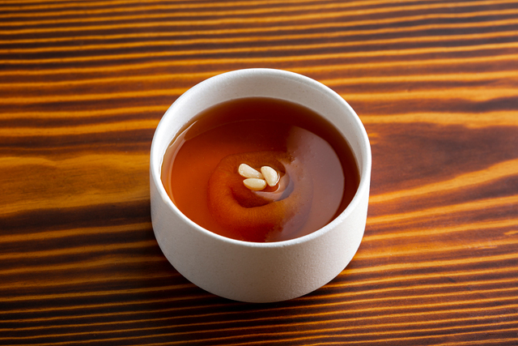

Sujeonggwa Recipe

This is one of my favorite traditional Korean desert. It is well known for its bittersweet taste!
Ingredients
- Cinammon
- Pine nut
- Ginger
- Persimmon
- Brown sugar
- Water
Steps>
- Peel of the gingers
- Wash the gingers and cinammon
- Put the gingers and cinammon into a pot
- Fill up the water into the pot and boil it for about an hour
- Take out the ginger and cinammon when the color of the water is dyed enough
- Put the brown sugar into the water and boil about 20 minutes
- Cool the water and place persimmon and pine nut into the water